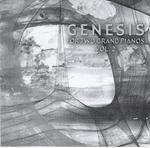

| Artist: | Yngve Guddal & Roger T Matte |
| Title: | Genesis For Two Grand Piano Vol 2 |
| Label: | Musea FGBG 4626 |
| Length(s): | 52 minutes |
| Year(s) of release: | 2004 |
| Month of review: | [12/2006] |
| 2) | Seven Stones | 4.58 |
| 3) | The Lamb Lies Down On Broadway | 5.15 |
| 5) | Blood On The Rooftops | 5.30 |
| 6) | Eleventh Earl Of Mar | 7.25 |
Interestingly a number of tracks are chosen that in their original version lean heavily on vocal melody. Since there are no vocals, piano takes the place of these vocal sections. Or at least, should do so. This may work more or less in shorter tracks like Me And Sarah Jane or Seven Stones, but it doesn't work out for the longer tracks. Cinema Show and Battle Of Epping Forest are too much stories told to retain their standing without vocals. Of course, the melodical jumpiness uncovered here is there in the original as well, but it's compensated for by the story line (well, not in Battle of course, which is wildly beyond saving).
For several of the tracks you would have to know the originals well enough to pick out which it is. Sure, The Lamb can be recognized easily enough, if only for the fact that the original has a piano intro which is pretty much copied. With the vocal melody tracks, though, it is not so. Also, a number of lesser known tracks were picked that might not have turned into hot favorites for a reason.